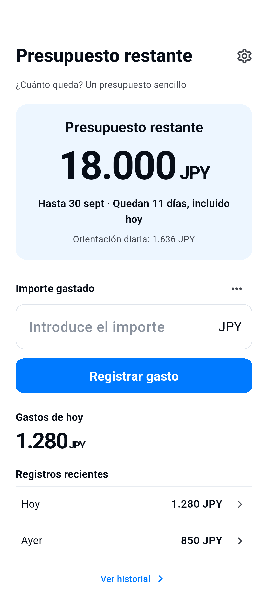

Configura el importe, las fechas y la moneda.
¿Cuánto queda? Un presupuesto sencillo
Registra lo que gastas. Mira cuánto queda.
Un presupuesto sencillo con el importe restante siempre a la vista.
Ver cómo funcionaPara iPhone y Android · Próximamente en tiendas

Cómo funciona
Gasta. Registra. Mira lo que queda.
Registra un gasto en Inicio. Las notas son opcionales.
Corrige o elimina registros y añade reembolsos en el historial.
Inicia tú el siguiente presupuesto. Los anteriores se conservan.
Lo esencial
Un presupuesto. Todo claro.
- Presupuesto restante
- El saldo se basa solo en tus registros. No es tu saldo bancario ni garantiza cuánto puedes gastar. Los reembolsos restauran el presupuesto; no registran ingresos. No hay renovación ni traslado automático.
- Seis idiomas · Ocho monedas
- 日本語 / English / 한국어 / 简体中文 / Español / Français
JPY / USD / EUR / KRW / CNY / GBP / CAD / AUD - Anuncios y opciones de privacidad
- La app es gratuita y muestra un solo banner pequeño en Inicio. Se oculta al escribir o editar. Las opciones de privacidad están en Ajustes cuando son necesarias. Los fallos de consentimiento o conexión no impiden registrar gastos.
Registros en tu dispositivo
Sin necesidad de cuenta.
Los importes, monedas, fechas, gastos, reembolsos, notas y ajustes se guardan en tu dispositivo para ofrecer las funciones de la app. No hay cuenta ni sincronización propia en la nube. No enviamos estos registros a nuestros servidores ni al SDK de anuncios. No añadimos SDK de analítica.
Los datos se guardan en el dispositivo. Las copias del sistema y la migración pueden incluirlos, pero no se garantiza su restauración. Eliminar la app puede borrar los datos. No hay cuenta ni servicio de restauración en la nube.
Política de privacidad →